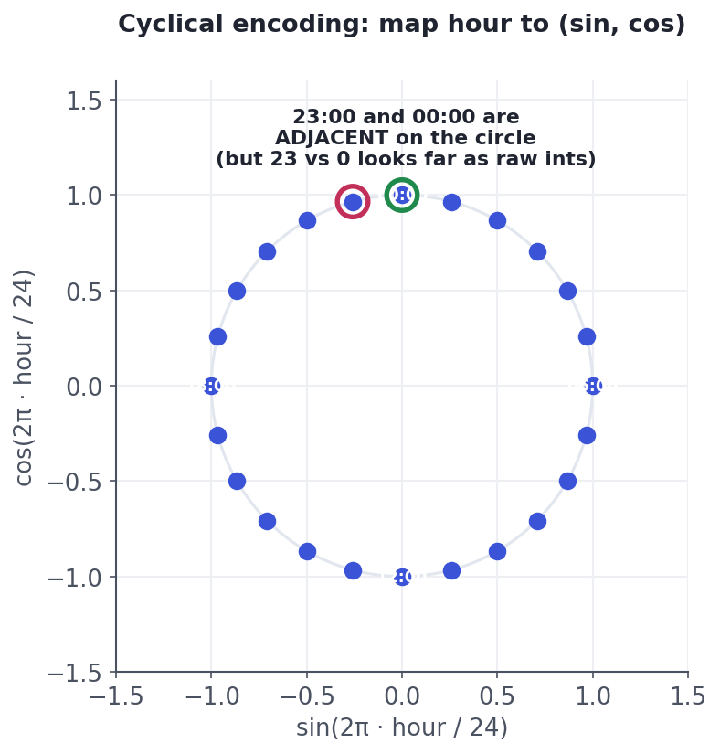

Dates, Text & Aggregates
Squeezing features from timestamps, strings, and groups.
Two data types hide enormous signal behind a format models can't read: dates and text. A raw timestamp is a meaningless big integer to a model; raw text is not a number at all. But buried in them are some of your best features — the hour a purchase happened, whether it's a weekend, how many days since a user signed up, the words in a review. Extracting these is often the difference between a mediocre model and a great one.
Datetime featuresDates: explode the timestamp into parts
A raw datetime is useless as one number, but it's a treasure chest of features. Pull out the components that plausibly matter, plus durations relative to other events:
- Calendar parts: year, month, day, day-of-week, hour, week-of-year, quarter.
- Flags: is_weekend, is_holiday, is_month_end, is_business_hours.
- Durations: days_since_signup, hours_since_last_purchase, account_age — often the strongest of all, because recency drives so much behaviour.
Why hour 23 ≠ far from hour 0The cyclical trap — and its fix
Time is circular, but integers are a straight line. Encode hour as 0–23 and the model thinks 23:00 and 00:00 are 23 apart — maximally distant — when they're actually one hour apart. Same for December→January, Sunday→Monday. The fix is cyclical encoding: map the value onto a circle with sine and cosine, so the ends meet:

hour to (sin(2πh/24), cos(2πh/24)) places the hours on a circle, so 23:00 and 00:00 land right next to each other — as they should. Raw integers would put them 23 apart. Use the same trick for month, day-of-week, and any cyclic feature.import numpy as np
def cyc(h, period=24):
return np.sin(2*np.pi*h/period), np.cos(2*np.pi*h/period)
def dist(a, b):
(sa, ca), (sb, cb) = cyc(a), cyc(b)
return round(float(np.hypot(sa-sb, ca-cb)), 2)
print(f"raw integer 'distance' 23 vs 0 : {abs(23-0)} <- looks far")
print(f"cyclical distance 23 vs 0 : {dist(23, 0)} <- actually adjacent")
print(f"cyclical distance 12 vs 0 : {dist(12, 0)} <- truly opposite (noon vs midnight)")raw integer 'distance' 23 vs 0 : 23 <- looks far cyclical distance 23 vs 0 : 0.26 <- actually adjacent cyclical distance 12 vs 0 : 2.0 <- truly opposite (noon vs midnight)
Bag-of-words & TF-IDFText: from words to numbers
For classic tabular models, the simplest useful text features are counts of words:
- Bag-of-words: one column per word in the vocabulary; each cell counts how often that word appears. Order is thrown away, but for many tasks (spam, topic, sentiment) word presence is enough.
- TF–IDF: weight each word by how often it appears in this document (TF) but down-weight words common across all documents (IDF). So "the" and "and" get near-zero weight while distinctive words like "refund" or "lawsuit" stand out — usually a clear win over raw counts.
Plus cheap, robust hand-features: text length, word count, count of !, share of capital letters — often startlingly predictive for spam and urgency.
Bag-of-words and TF–IDF are still excellent baselines — fast, interpretable, and hard to beat on small text datasets. Modern embeddings (from transformer models) capture meaning and word order and win on large, nuanced tasks, but they're heavier and less interpretable. Start with TF–IDF; reach for embeddings when the task and data justify it.
Interactive labYour turn — prove the cyclical fix
Encode hours cyclically as (sin(2πh/24), cos(2πh/24)). Compute the Euclidean distance between hour 23 and hour 0 in this encoding, round to 2 decimals, and assign to answer. (As raw integers they're 23 apart; cyclically they should be tiny.)
cyc(h) helper returns the (sin, cos) encoding. First Run boots Python.np.linalg.norm(cyc(23) - cyc(0)) is the Euclidean distance between the two 2-D points; round to 2 dp.answer = round(float(np.linalg.norm(cyc(23) - cyc(0))), 2)About 0.26 — tiny, reflecting that 23:00 and 00:00 are one hour apart, versus a raw-integer gap of 23. That's the whole point of cyclical encoding: the clock's midnight seam disappears and the model sees time the way it actually works.
★ Key points to remember
- Explode raw datetimes into calendar parts (hour, day-of-week, month), flags (is_weekend), and durations (days_since_signup — often the strongest).
- Time is circular: encode cyclic features with sin/cos so 23:00 sits next to 00:00 (not 23 apart).
- Turn text into numbers with bag-of-words or, better, TF–IDF (down-weights common words); add cheap hand-features (length,
!count). - TF–IDF is a strong, interpretable baseline; embeddings win on large, meaning-heavy tasks at higher cost.
- All learned pieces (IDF weights, vocab) are fit on train only.
month as 1-12 and feed it to a model. Why might December→January behaviour be mismodelled?◆ Practice▸
Show solution & reasoning
Strong candidates: hour-of-day (cyclically encoded) — demand peaks at lunch/dinner; day-of-week (cyclic or one-hot) — weekends differ from weekdays; is_weekend / is_holiday flags — step changes in behaviour; is_business_hours — office vs. home ordering; days_since_last_order per user — recency drives repeat demand; and context features like is_raining joined on the timestamp — weather spikes delivery. The reasoning thread: decompose the timestamp into the human rhythms (daily/weekly/seasonal cycles, holidays, recency) that actually drive the outcome — and encode the cyclic ones with sin/cos so the wrap-arounds behave.
Show solution & reasoning
The IDF weights and the vocabulary are learned statistics — fitting them on the full dataset means the test documents influenced the feature definitions (which words exist, how they're weighted), so information leaked from test into the features. It should be fit on train only and merely applied to test. Does it matter? Usually the effect is modest for IDF on large corpora (the weights are broadly similar), but it's still methodologically wrong and can matter on small datasets or when the vocabulary differs — and it's the same discipline that prevents far more dangerous leaks (like target encoding). So fix it on principle: wrap the vectorizer in a pipeline that fits inside the train fold.
◎ Deep dive: why (sin, cos) as a pair, and the text-feature ladder▸
Why sine and cosine, not just one. A single sine can't identify an hour uniquely — sin is the same for two different times (e.g. it rises and falls symmetrically), so the model couldn't tell them apart. The pair (sin, cos) gives every angle a unique point on the unit circle, preserving both which time it is and how close any two times are. That's the minimal faithful embedding of a cycle: two columns that together encode position-on-a-loop, with the seam (23→0, Dec→Jan) automatically stitched.
The text-feature ladder, and when to climb it. Rung 1: hand-features (length, punctuation, capital ratio) — trivial, robust, shockingly useful for spam/urgency. Rung 2: bag-of-words — presence of vocabulary. Rung 3: TF–IDF — weighted presence, the classic strong baseline. Rung 4: embeddings (word2vec, and today transformer sentence embeddings) — dense vectors capturing meaning and, with transformers, word order and context. Each rung adds power and cost/opacity. The professional move is to establish a TF–IDF baseline first — it's fast, interpretable, and frequently within a hair of the fancy approach — and only climb to embeddings when the data volume and task nuance clearly pay for it.